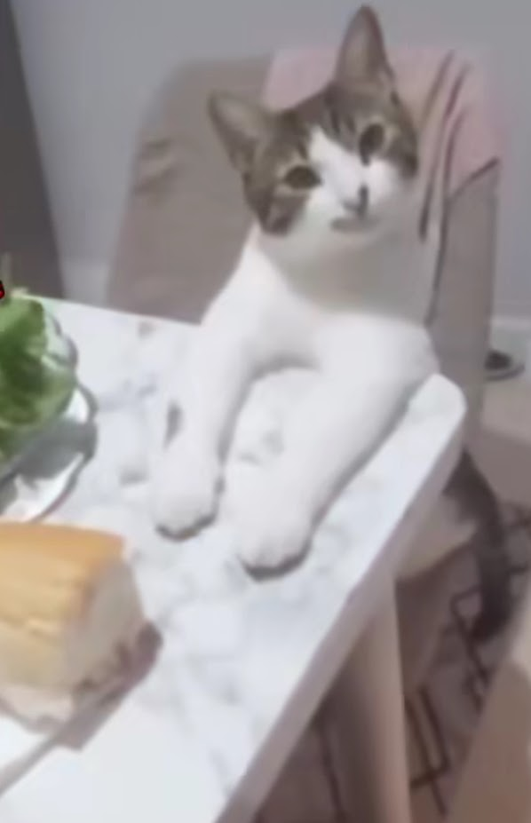

Superr Studioss is a branch of the studio that is made of developers that may've collaberated in other projects with Superr Studio. These projects include game jams and music. The game jams have been included in the "Games" page of this site. You can also find their collaborators in the descriptions.
